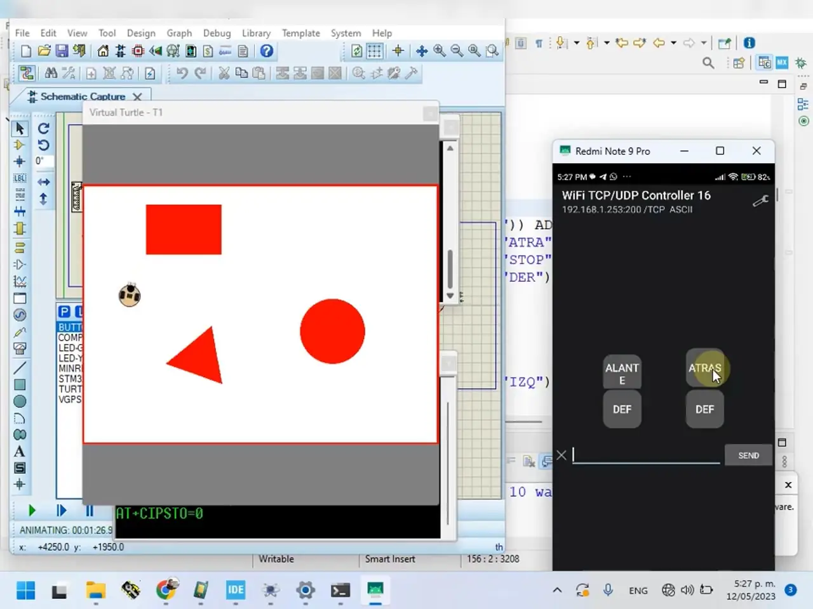

Con un adaptador USB-serial el módulo aparece como un puerto COM (en la clase, COM18). Ábrelo en la pestaña Serial de Hercules.
Por defecto estos módulos vienen a 115200 baudios.
Pasamos del Bluetooth al WiFi con un ESP8266 conectado por serial. Primero vemos la idea de IP y puerto con Hercules en modo TCP, luego probamos el módulo con comandos AT (AT, AT+CIOBAUD) y lo dejamos a 9600. En el STM32 una librería esp8266.c configura el módulo como punto de acceso con su propia red, abre un servidor TCP y recibe las órdenes por la interrupción serial de la clase anterior (ahora deshabilitándola mientras se procesa). Desde el celular, con WiFi TCP/UDP Controller, el carrito de Proteus se mueve con botones.

Con un adaptador USB-serial el módulo aparece como un puerto COM (en la clase, COM18). Ábrelo en la pestaña Serial de Hercules.
Por defecto estos módulos vienen a 115200 baudios.
Envía AT seguido de
Con AT+CIOBAUD=9600 cambias la velocidad. Después debes reabrir el puerto a la nueva velocidad, si no verás caracteres basura.
AT<cr><lf>
AT+CIOBAUD=9600<cr><lf>Para la simulación en Proteus conviene 9600. En un montaje real puedes dejar 115200. Hay un comando para restaurar de fábrica, y entonces vuelve a 115200.
La callback de recepción ahora está en su propio archivo UART_INT.c. Solo hay .c porque esa función la llama el micro, no tu código.
Cuando llega el final de trama se levanta la bandera, se deshabilita la interrupción de la USART1 y se sale de la callback.
if (dato_leido == '*')
{
contador_rx = 0;
flag_rx = 1;
NVIC_DisableIRQ(USART1_IRQn); // deshabilita la interrupción
return;
}
HAL_UART_Receive_IT(&huart1, dato_rx, 1);En el while: procesa, limpia la trama con memset, borra banderas pendientes y vuelve a habilitar la interrupción.
if (flag_rx == 1)
{
procesarx();
flag_rx = 0;
contador_rx = 0;
memset(trama_rx, 0, 100); // limpia la trama
__HAL_UART_CLEAR_OREFLAG(&huart1);
NVIC_ClearPendingIRQ(USART1_IRQn);
NVIC_EnableIRQ(USART1_IRQn); // habilita otra vez
HAL_UART_Receive_IT(&huart1, dato_rx, 1);
}ATE0 quita el eco para que el módulo no repita cada comando.
AT+CWMODE=2 lo pone a funcionar como router (crea su propia red, sin internet).
Antes de cambiar de modo se cierra el servidor (CIPSERVER=0), se elige conexión única (CIPMUX=0) y modo normal (CIPMODE=0).
AT+CWSAP define el nombre de la red, la clave, el canal (5) y el tipo de seguridad (3 = WPA2_PSK).
Para meter comillas dentro de una cadena en C se escribe \".
AT+CIPAP fija la IP del módulo; la última cifra alta (253 o 254) es la habitual para el gateway.
void esp8266_router_init(void)
{
uartx_write_text(&huart1, "ATE0\r\n"); // sin eco
Delay_ms(1000);
uartx_write_text(&huart1, "AT+CWMODE=2\r\n"); // modo router
Delay_ms(200);
uartx_write_text(&huart1, "AT+CIPSERVER=0\r\n");
Delay_ms(200);
uartx_write_text(&huart1, "AT+CIPMUX=0\r\n");
Delay_ms(200);
uartx_write_text(&huart1, "AT+CIPMODE=0\r\n");
Delay_ms(200);
uartx_write_text(&huart1, "AT+CWSAP=\"YUCA\",\"QUESO\",5,3\r\n");
Delay_ms(600);
uartx_write_text(&huart1, "AT+CIPAP=\"192.168.1.254\"\r\n");
// ... luego se abre el servidor TCP en el puerto 200
}Los comandos que abren el servidor (CIPMUX=1 y CIPSERVER=1,200) no se ven completos en el video. Revísalos en la hoja de comandos AT del ESP8266.
Conecta el celular a la red del módulo (YUCA) y en WiFi TCP/UDP Controller pon la IP del módulo, el puerto 200 y TCP.
Deja visibles solo los botones que uses, ponles nombre y asigna el comando de cada uno, por ejemplo ADEL* y ATRA*.
Con Proteus corriendo, cada botón envía su orden por WiFi y el carrito se mueve igual que con Bluetooth.
Cualquier cliente TCP sirve, por ejemplo TCP Tools: pones IP, puerto y envías el texto.
Ventaja frente a Bluetooth: varias personas pueden conectarse, aunque el ESP-01 admite pocas conexiones y se puede saturar.
El ESP8266 trabaja a 3.3 V y pide picos de corriente. Si se reinicia, aliméntalo con un regulador de 3.3 V aparte.